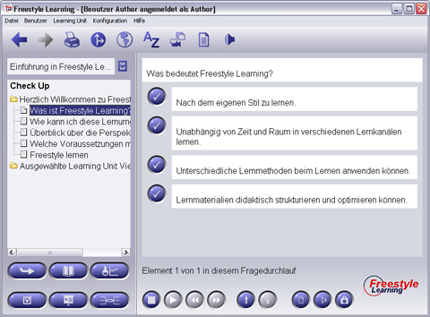

Die Auswahl eines Multiple Choice Elementes aus dem Strukturbaum zeigt eine Frage in dem oberen Abschnitt des Anzeigebereichs an.

Unterhalb der Frage stehen mehrere Antwortmöglichkeiten zur Verfügung. Davon können eine oder mehrere Antworten richtig sein. Durch Anklicken der blauen Schaltfläche neben den Antworten können Sie die Auswahl der Ihrer Meinung nach richtigen Antworten vornehmen. Ausgewählte Schaltflächen werden mit einem Häckchen versehen. Durch einen Klick auf die "Hinweis"-Schaltfläche in der Interaktionsleiste erhalten Sie einen Tip durch den Autor.
Zusätzliche View-spezifische Interaktions-Schaltflächen (nur im Übungsmodus)
| Grafischer Hinweis | Grafischen Hinweis oder Kommentar des Autors anzeigen lassen | |
| Audio- / Video-Hinweis | Hinweis oder Kommentar des Autors anhören oder ansehen (wenn vom Autor aktiviert) |
Zurück zur Hauptseite